HTML (HyperText Markup Language) je standardni jezik za označavanje koji se koristi za kreiranje web stranica. HTML opisuje strukturu web stranice koristeći niz elemenata.
<!DOCTYPE html>
<html lang="hr">
<head>
<meta charset="UTF-8">
<title>Moja prva stranica</title>
</head>
<body>
<h1>Dobrodošli!</h1>
<p>Ovo je moj prvi HTML dokument.</p>
</body>
</html>
<br>, <img>).
Lekcija 2 • 22. rujan 2025.
Depending on whether two elements whose margins touch have positive or negative margins, the results will be different:
An element with display: inline-block does a subset of the block things we already know about:
Lekcija 3 • 24. rujan 2025.
When using the shorthand property the order of the property values is:
background-image: linear-gradient(direction, color-stop1, color-stop2, ...);
Direction:
If you want more control over the direction of the gradient, you can define an angle parameter, instead of the predefined directions (to bottom, to top, to right, to left, to bottom right, etc.).
background-image: linear-gradient(angle, color-stop1, color-stop2);
The CSS repeating-linear-gradient() function is used to repeat linear gradients
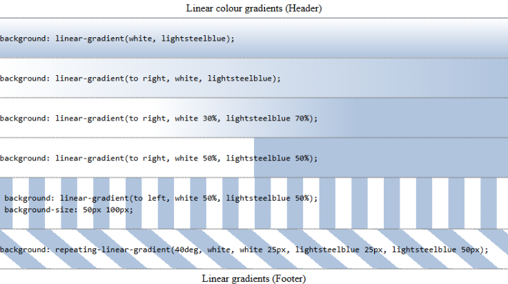background-image: radial-gradient(shape size at position, start-color, ..., last-color);
By default, shape is ellipse, size is farthest-corner, and position is center.
Radial Gradient:
The shape parameter defines the shape of the gradient. It can take one of the following values:
The CSS repeating-radial-gradient() function is used to repeat radial gradients
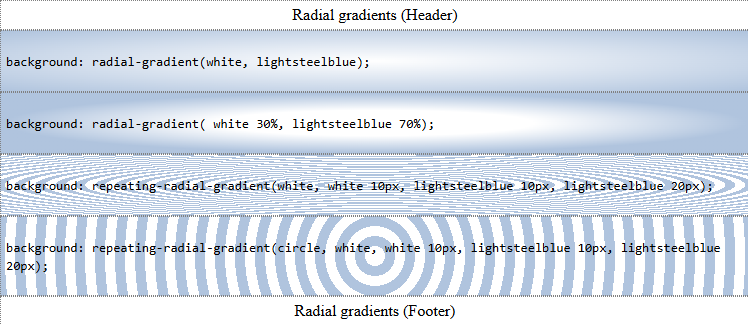Lekcija 5 • 1.listopad 2025.
Svojstvo POSITION određuje vrstu pozicioniranja elementa.
Ovo svojstvo može imati jednu od sljedećih vrijednosti:
Elementi se zatim pozicioniraju na svoju konačnu lokaciju pomoću svojstava ( top, bottom, left, right)
Svi HTML elementi su prema zadanim postavkama pozicionirani statički. Statički pozicionirani elementi nisu pod utjecajem svojstava top, bottom, left i right. Element sa position: , static; je uvijek pozicioniran prema normalnom toku stranice
PRIMJER
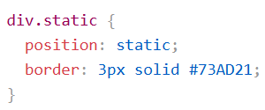Element s position: relative; je pozicioniran u odnosu na svoj normalni položaj uu toku dokumenta. Postavljanje svojstava top, right, bottom i left uzrokovat će pomicanje elementa izvan njegovog normalnog položaja. Ostali sadržaj neće se prilagoditi kako bi se uklopio u prazninu koju je ostavio element
PRIMJER
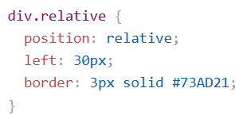Element s position: fixed; je pozicioniran relativno u odnosu na prikaz, što znači da uvijek ostaje na isttom mjestu čak i ako se granica pomjera. Svojstva top, right, bottom i left koriste se za postavljanje konačne lokacije elementa. Fiksni element ne ostavlja prazninu na stranici tamo gdje bi se inače trebao nalaziti.
PRIMJER
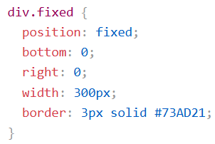Element s position: absolute: je pozicioniran u odnosu na najbližeg pozicioniranog pretka ( s pozicijom koja nije statička). Međutim; ako apsolutno pozicionirani element nema pozicioniranih predaka, koristi tijelo dokumenta i pomiče se zajedno s pomicanjem stranice.
NAPOMENA:Apsolutno pozicionirani elementi uklanjaju se iz normalnog toka dokumenta i mogu se preklapati s drugim elementima
Evo jednostavnog primjera:
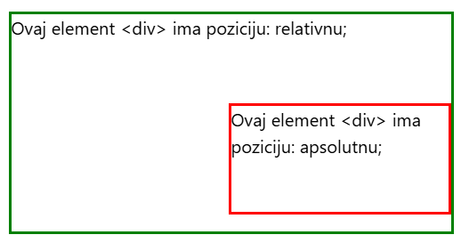PRIMJER:
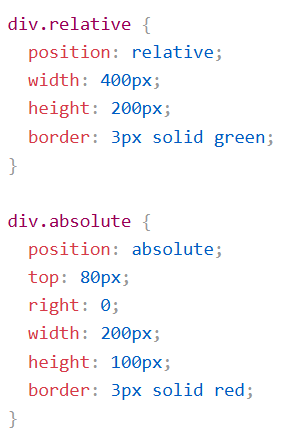Element s position: sticky; preklopnim položajem između a relative i fixed, ovisno o položaju pomicanja. Ljepljivi element se pozicionira dok se ne dostigne određena pozicija pomicanja- tada se "zalijepi" na tom mjestu (kao position: fixed)
NAPOMENA: morate navesti barem jedno od svojstava top, right, bottom ili left, da bi ljepljivo pozicioniranje funkcioniralo
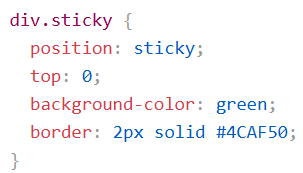Lekcija 6 • 1.listopad 2025.
U najjednostavnijoj upotrebi, određujete samo horizontalni i vertikalni pomak sjene.
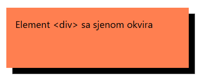PRIMJER:
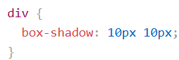Parametar color definira boju sjene
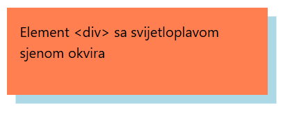PRIMJER određivanje boje:
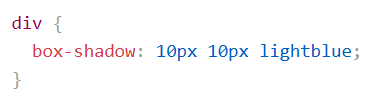Parametar blur definira radijus zamućenja sjene.Što je veći broj to će sjena biti zamućenija.
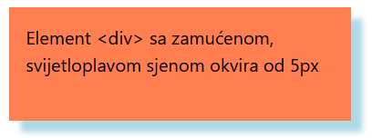PRIMJER zamućenja sjeni:
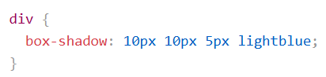Parametar spread definira radijus širenja sjene.Pozitivna vrijednost povećava veličinu sjene, a negativna vrijednost smanjuje veličinu sjene.
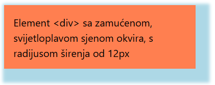PRIMJER postavljanja radijusa širenja sjene:
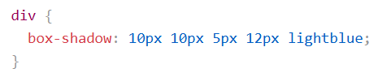Parametar insert mijenja sjenu iz vanjske sjene u unutarnju sjenu.
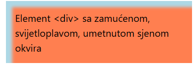PRIMJER umetnutog parametra:
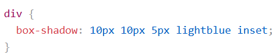Element također može imati više sjena. Za dodavanje više od jedne sjene elementu, dodajte popis sjena odvojen zarezima.
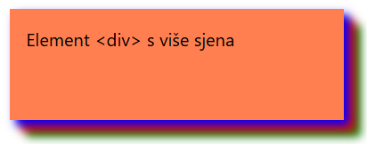PRIMJER:
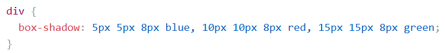Svojstvo možete koristiti i za izradu kartica nalik papiru: box-shadow
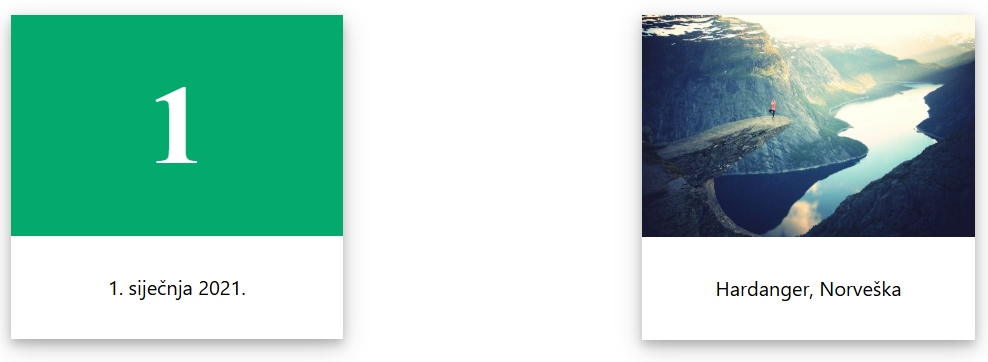PRIMJER:
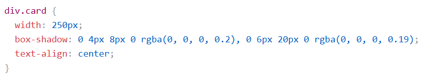Lekcija 7 • 1.listopad 2025.
Svojstvo border-radius definira polumjer kutova elemenata. Ovo svojstvo se može primjeniti na sve elemente sa background-color, border ili bacground-image
PRIMJER:
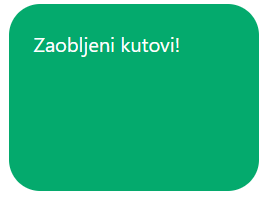PRIMJER KODA:
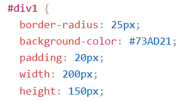Svojstvo border-radius može imati jedne od četiri vrijednosti.
ČETIRI VRIJEDNOSTI: border-radius 15px 50px 30px 5px; (vrijednosti idu u smjeru sata)
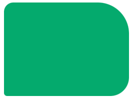PRIMJER:
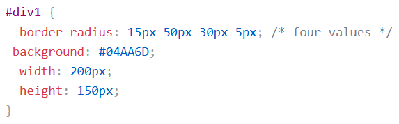TRI VRIJEDNOSTI: border-radius: 15px 50px 30px; (prva vrijednost-gornji lijevi kut, druga vrijednost- gornji desni i donji lijevi kut, treća vrijednost- donji desni kut)
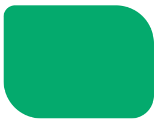PRIMJER:
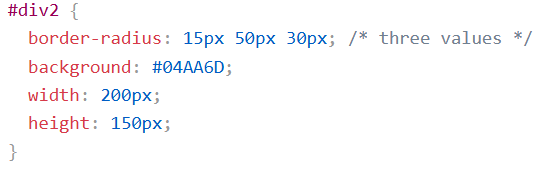DVI VRIJEDNOSTI: border-radius: 15px 50px; (prva vrijednost: gornji lijevi i donji desni kut, druga vrijednost:gornji desni i donji lijevi kut)
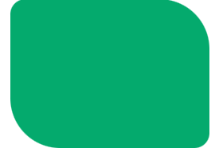PRIMJER:
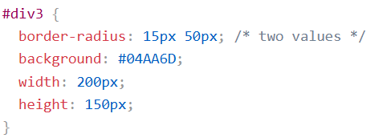JEDNA VRIJEDNOST: border-radius:15px (vrijednost se odnosi na sva četri kuta, koji su jednako zaobljeni.)
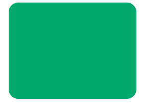PRIMJER:
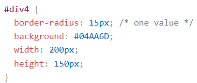